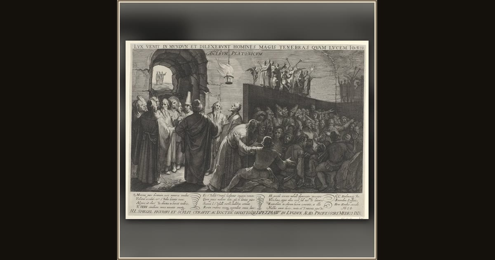

Grot van Plato (Antrum Platonicum)
Jan Saenredam, after Cornelis Cornelisz. van Haarlem; published by Hendrick Hondius · 1604 · rijksmuseum
Saenredam’s engraving shows people gathered in a cave, a raised wall with figures and a hanging lamp, and a passage toward daylight, echoing Socrates’ underground dwelling (514a). Explore its place in Plato's Republic, Book VII, section 1.